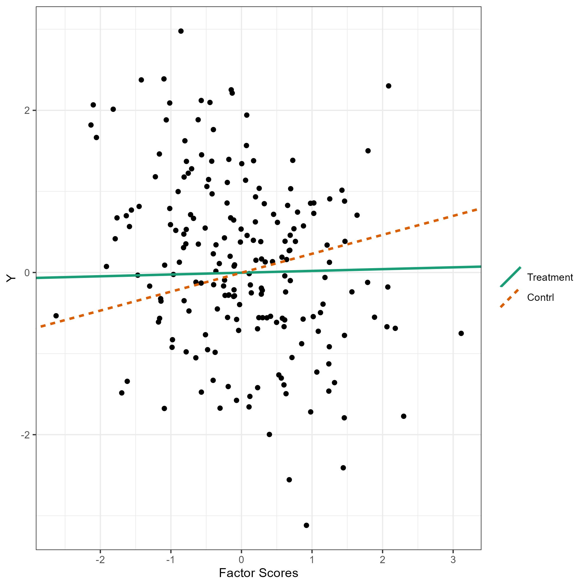

flps
flps.Rmd
library(flps)
#> Version: 0.2.0
#>
#> It is a demo.
#> Acknowledgements. It is supported by the Institute of Education Sciences, U.S. Department of Education, through Grant R305D210036.Fully Latent Principal Stratification (FLPS)1
Fully Latent Principal Stratification (FLPS) is an extension of principal stratification.
Installation
Install the latest release from CRAN or git repo:
devtools::install_github("sooyongl/flps")Example Usage
Data Generation and Preprocessing
Generate simulated rectangular data and convert it to a list of data suitable for the
rstanpackage.makeInpData()creates input data for running FLPS.inp_data: a data frame containing all the data for FLPS. It is used inrunFLPSfunction.
set.seed(10000)
inp_data <- flps::makeInpData(
N = 200, # sample size
R2Y = 0.2, # r^2 of outcome
R2eta = 0.5, # r^2 of eta by one covariates
omega = 0.2, # the effect of eta
tau0 = 0.23, # direct effect
tau1 = -0.16,# interaction effect between Z and eta
betaL = 0.2,
betaY = 0.4,
lambda = 0.8, # the proportion of administered items
nitem = 10, # the total number of items
nfac = 1, # the number of latent factors
lvmodel = 'rasch' # tag for latent variable model; case-sensitive (use lower-case letters)
)
# Input data matrix
data.table::data.table(inp_data)
#> Y Z X1 eta1 v1 v2 v3 v4 v5 v6 v7 v8 v9 v10
#> 1: -0.72862564 1 -0.20087849 0.49705730 0 1 0 0 1 0 1 0 1 1
#> 2: 0.43624761 1 -0.81367558 0.09644683 1 1 1 1 1 1 0 0 0 1
#> 3: 0.71005101 1 -0.09306958 -0.30660832 1 1 1 0 0 1 1 1 0 1
#> 4: 0.01947398 1 -0.08743884 -0.37419814 0 1 1 0 0 0 1 0 0 0
#> 5: -1.00950577 1 -2.16774891 -1.81547040 0 1 0 0 0 0 0 0 0 0
#> ---
#> 196: -0.47559245 0 0.23763106 -0.27108910 NA NA NA NA NA NA NA NA NA NA
#> 197: 0.46877629 0 -0.03646065 1.12609970 NA NA NA NA NA NA NA NA NA NA
#> 198: 0.78717334 0 0.06867924 0.07008599 NA NA NA NA NA NA NA NA NA NA
#> 199: 0.56380180 0 0.56467755 0.34826071 NA NA NA NA NA NA NA NA NA NA
#> 200: 0.36809486 0 0.82158503 -0.35012492 NA NA NA NA NA NA NA NA NA NAModel Fitting with FLPS
The runFLPS function internally converts
inp_data into the appropriate data format for
rstan, utilizing the provided information before executing
the FLPS analysis.
In order to optimize your workflow, consider utilizing the
modelBuilder() function to pre-compile the Stan code,
especially if you’re working with a relevant measurement model. This
function compiles the Stan code and stores the resulting
stanmodel object within the flps package directory.
Note: Should you encounter an error, ensure that your
Rcpp package is updated to the latest version.
Additionally, refreshing your R session is recommended
after executing modelBuilder() to avoid potential
conflicts. Upon subsequent usage of runFLPS(), this
pre-compilation ensures the function operates more swiftly and
efficiently by bypassing the compilation step, providing a smoother and
faster analytical process.
modelBuilder(type = "rasch")In case of errors, try the latest rstan and
StanHeaders packages.
remove.packages(c("rstan", "StanHeaders"))
install.packages("rstan", repos = c("https://mc-stan.org/r-packages/", getOption("repos")))Now, execute your FLPS model.
Results
Retrieve summaries and visualize results with the following:
The flps_plot() shows the plot related to FLPS
models
flps_plot(res, type = "causal")
flps_plot(res, type = "latent")
Acknowledgements. This package is supported by the Institute of Education Sciences, U.S. Department of Education, through Grant R305D210036.↩︎